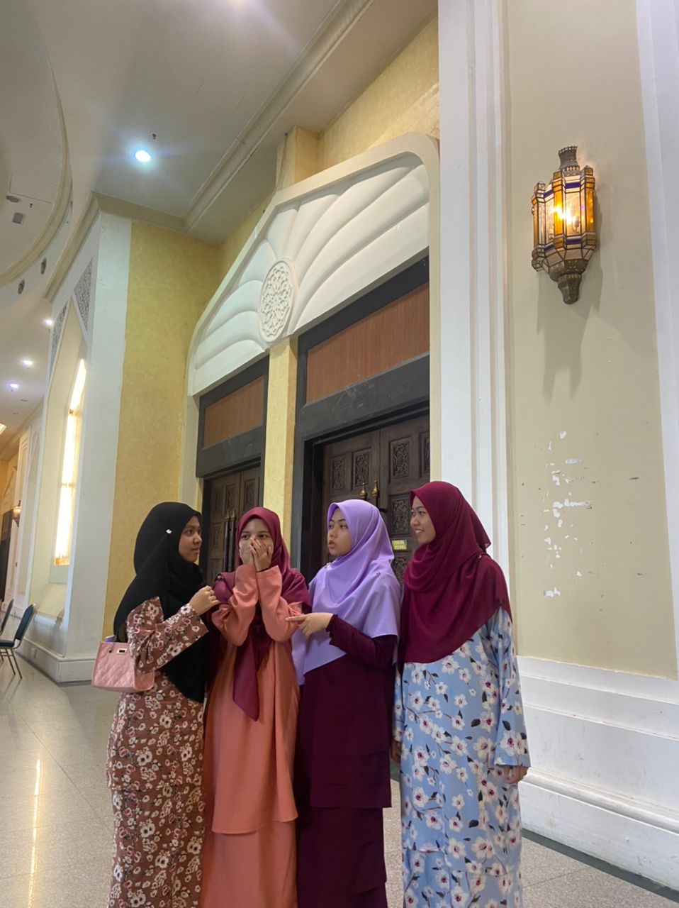
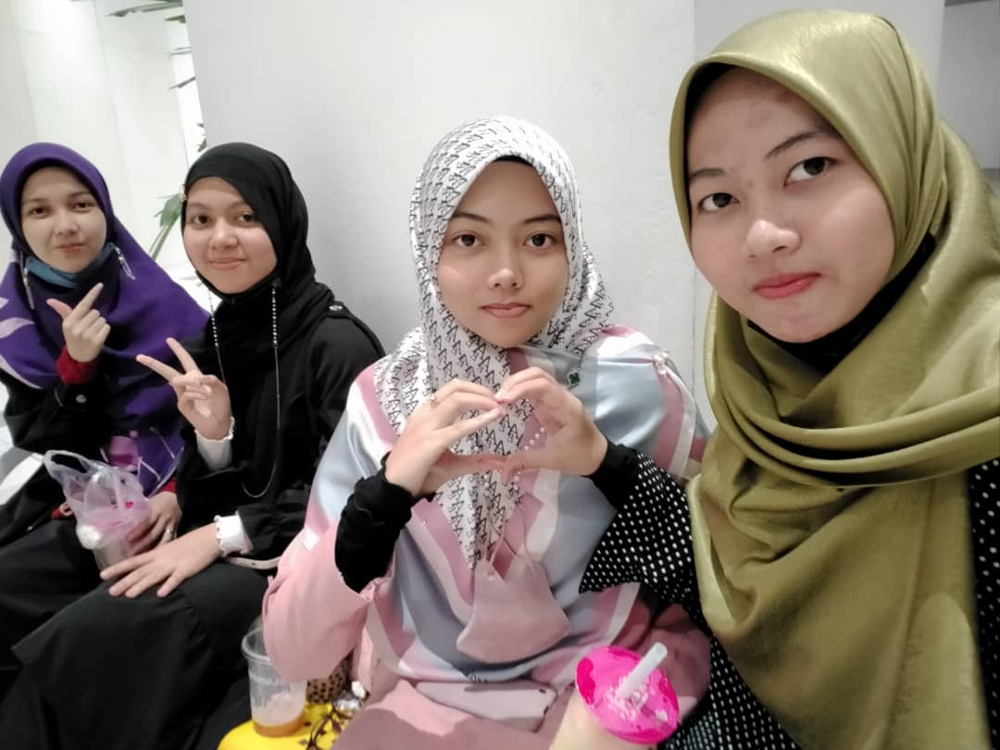
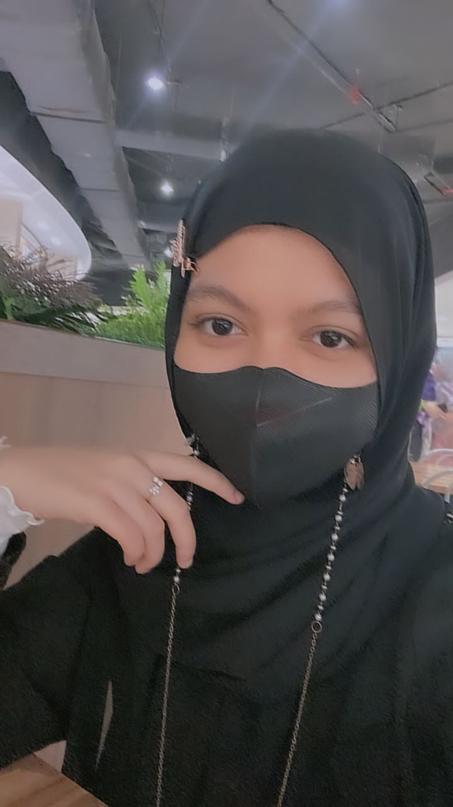
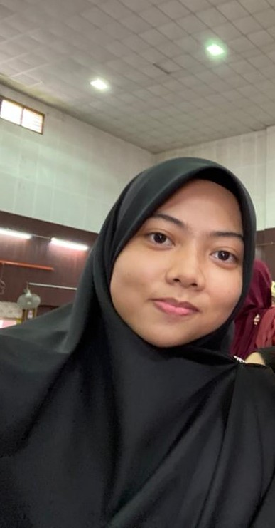
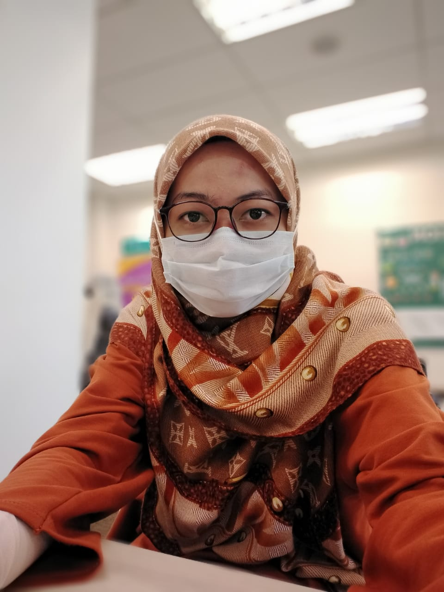
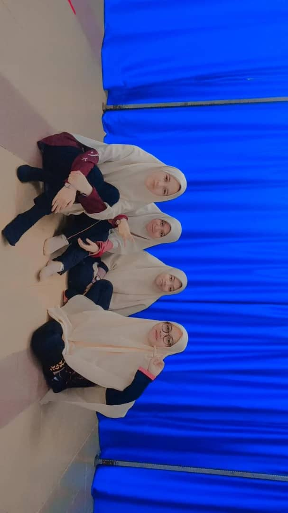
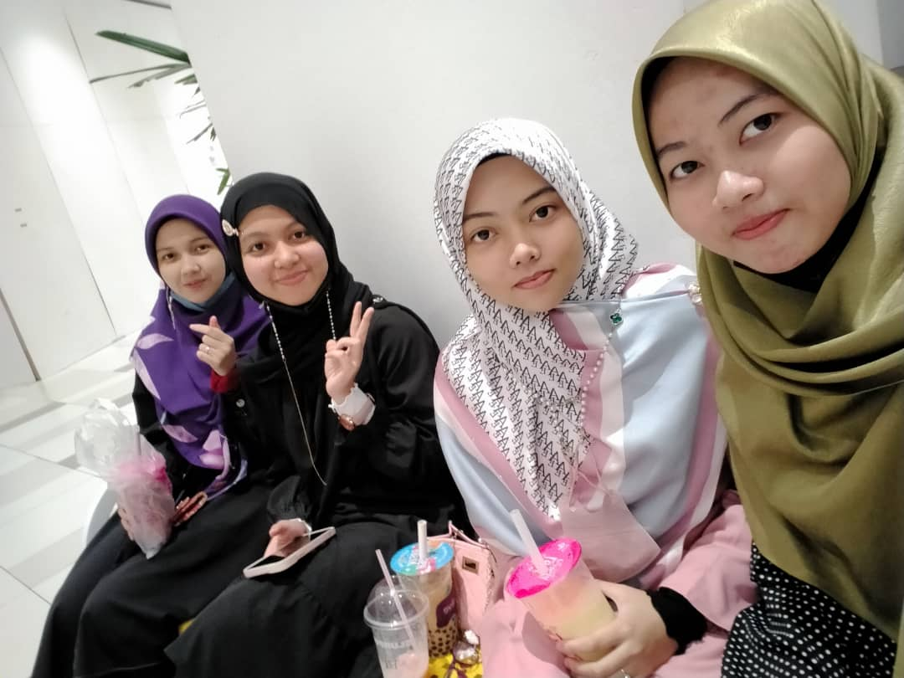
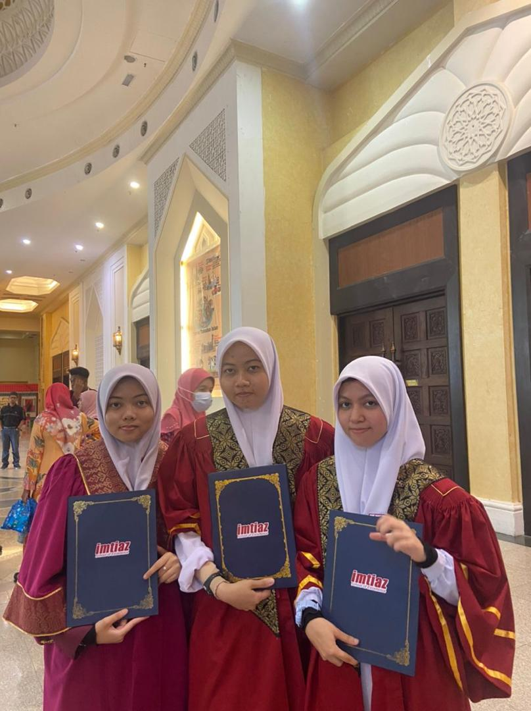
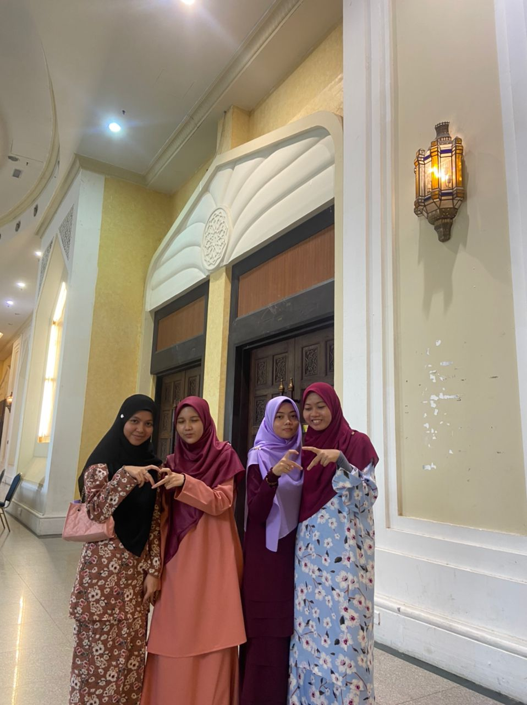

<!DOCTYPE html>
<html>
    <head>
        <title> Uhibbukum Fillah :) </title>
    </head>
</html>
<body>
    <div id ="Gambar dan video">
        <a href="https://id.pinterest.com/pin/789537378403714331/"
           target ="_blank">  <br>Kalu nak tekan, tekanlah :><br></a>
    </div>
    <div id ="list">
        <ul>
            <li><a href = "#When it begins"> Intro </a></li>
            <li><a href = "#Biodata"> Sesi perkenalan </a></li>
            <li><a href = "#Our moment"> Gambar </a></li>
            <li><a href = "#Last word"> Kesimpulan</a></li>
        </ul>
    </div>
    <div id="When it begins">
        <h2><strong> When it Begins</strong></h2>
        <p>
             Walaupun kita berkenalan tak lama mana, dalam <strong> 5 tahun </strong> dan ke atas, tapi <em>kenangan</em> kita bersama sentiasa dalam
        memori, tidak kira di kala <em> sunyi </em> dan <em>lonely</em>. Saja, buat <em> touching sikit</em>. Uhuk!
        </p>
        <p>
            Pada <em> awal</em> perkenalan kita, bermula dengan orientasi di <strong> ikt</strong> yang tercinta. Tidak kenal sesama sendiri,
            namun, dengan takdir <em>ilahi</em>, kita menjadi kawan umpama <em>isi dengan kuku</em>. Begitulah perkenalan kita, dengan pertemuan 
            sewaktu di sekolah, menjadikan kita sebagai<strong> sahabat</strong> hingga ke <em>hari</em> ini dan <em>di syurga nanti</em>.
        </p>
         
        
    </div>
    <div id="Biodata">
        <p><h2><strong>Biodata:</strong></h2></p>
        <ol>
        <p><li><h3><strong> Jannah (akak syurga) </strong></h3></li></p>
        <p></p>
        <ul>
            <li> Kedua tertua</li>
            <li> Bulu mata panjang nak mampus</li>
            <li> Adelah gedik sikit</li>
            <li> Baik jer, reti pujuk org :></li>
            <li> Jenis org hok mangat gitu </li>
        </ul>
        <p> Just nak bagitahu, belajar rajin - rajin kat Sarawak sana, jangan lupa saya, chatlah saya, insyallah saya balas.
            Kalau ade apa2 boleh call, jangan lupa bawak cenderamata dari sana. hehehehee. Moga kita boleh jupe lagi time belajar ni.
        </p>
        <p><li><h3><strong> Alia (syakkku)</strong></h3></li></p>
        <p></p>
        <ul>
            <li> Anak kedua</li>
            <li> Pendengar dan pencinta yg setia</li>
            <li> Pipi pau</li>
            <li> Boleh tukar expression sekelip mata</li>
            <li> Kpop Girl</li>
        </ul>
        <p> To kawan yg dah lama kenal, do your best, grab biasiswa time degree, gi lah kat uni saya, sedih x dok sek kiter, ajoklah saya raya rumah awok.
            Kalu, saya nak mitok tolong, saya mitok ngan awok jer. Hope sek kiter x busy ngat. Hope boleh gi umoh awok gi lepas ni. Chatlah ngan saya gi. Lame doh x dengor.
        </p> 
        <p><li><h3><strong> Jazlina (Jazluv) </strong></h3></li></p>
        
        <ul>
            <li> Manja nak mampus</li>
            <li> Well, caring gak lah</li>
            <li> Budak medik</li>
            <li> Ade kawan lain, huhuhu</li>
            <li> Budak manga</li>
        </ul>
        <p> Gud to you, tq sebab still in contact dgn saya walaupun saya x react status awok, hehehehe. Mohon chat ngan saya gi, marilah sini, wape kali ajok doh
            Lain kali marilah rumah saya. Insyallah mok saya wak laksa penang bila jamuan terbuka. Belajar molek eh, moga dapat capai yg awok impikan.
        </p>
        </ol>
    </div>
    <div id="Our moment">
        <p><h2><strong> Our moment</strong></h2></p>
        <p>Yang ni jer saya mampu bagi:</p>
        <ol>
            <p><li><strong>Time Sekolah</strong></li></p>
               
            <p><li><strong>The end of school's day</strong></li></p>
               
            <p><li><strong>Jamuan after SPM Exam</strong></li></p>
               
            <p><li><strong>Result SPM</strong></li></p>
               
            <p><li><strong>Reunion </strong></li></p>
               
            <p><li><strong>Annual Dinner</strong></li></p>
               
            <p><li><strong>Graduasi</strong></li></p>
               
            <p><li><strong>Majlis apresiasi</strong></li></p>
               
            <p><li><strong>Cincin Persahabatan</strong></li></p>
                  
    </div>
    <div id="Last word">
        <p><h2><strong> Last Word</strong></h2></p>
        <p> Sebab saya tak tahu dah nak buat camne, so, inilah <em>pengakhirannya</em>. Last but not least, saya just nak cakap yang saya <strong> rindu</strong> sek awok lake.
            Mungkin, awok x bace atau x dw pon bende ni, tapi kalu awok <em>baca</em> dan <em>simpan</em>, saya amat <strong>menghargainya</strong>. Mungkin awok rase sebab saya <em>lonely</em> ngat, 
            dan memang pon. Tapi, just <em> ni jer</em>saya boleh bagi ker sek awok sume. Saya harap sek awok <strong> x lupe sek kiter</strong>, kita still <em>in contact</em>. <strong>Belajar sungguh -sungguh</strong>
            supaya jadi orang yg berjaya. Baru saya <strong> bangga</strong> dgn sek awok. Rajin2 kanlah pesan sesama sendiri untuk <em>jaga quran</em>. saya <strong>tacod</strong> ngat kalu saya tinggal quran. Hope us can do well.
            Tu jer kot, harap sek awok suke lah website saya buat ni. Yg ni jer saya belajar setakat ni. Banyok gi nok kate, tapi di lain hari pualak yer. <em>See you when I see you.</em> Bye, assalamualaikum.
        </p>
    </div>
    <div id="Made by">
        <p><h3><strong>Made by</strong></h3></p>
        <p><em>Cahaya beradab</em></p>
    </div>
</body>